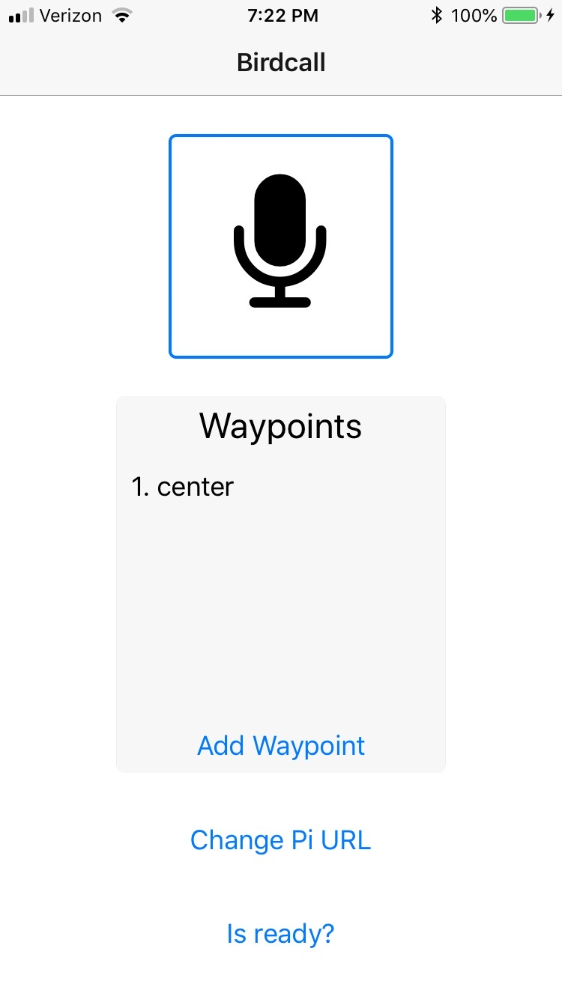

Contents
Vision Statement
Birdcall is a mobile phone application that enables the user to control their drone using their voice. The user will speak commands into the app, which will communicate with a Raspberry Pi to send commands to the drone. The user will be able to set up waypoints through an on screen UI, since it would be cumbersome to speak coordinates.
Our motivation for this project was to explore an alternative way of controlling drones. If this project was further developed, we see many potential advantages of having a more hands free way of flying drones. One example could be a firefighter who is controlling a drone using his voice while his hands are busy with another task. Another example could be a photographer who uses a drone to get a different angle on a shot while also controlling a camera on the ground:
Glossary
Raspberry Pi (Pi): a basic, credit card sized computer that is capable of performing tasks such as running a web server. The Pi serves as a lightweight solution for communication between the App and Drone.
Drone Server: the web server being run on the Rasberry Pi. Responsible for receiving communication from the App and sending flight commands to the Drone.
Mobile Application (App): the iOS app called Birdcall which is used to communicate with the server.
Waypoint: a destination defined by three characteristics: longitude, latitude, and altitude. In the birdcall application, waypoints can be given custom names which indicate the lon, lat and alt to which the drone should fly.
Return to Launch: a built in command in the drone software that tells the drone to land at the place from which it took off.
SITL: an acronym for software in the loop. In the context of this project, it is a simulation environment for drones.
Development Process
We used an Agile development process for this project. We split up the project into a series of week long sprints.
Week 10: Define users stories, assign user stories for first sprint, design screen mockups, create architectural sketch, and look into offline NLP libraries.
Week 11: Write architectural spike that allows us to speak into a basic app, send it to a Raspberry Pi, and print what we said.
Week 12: Connect Raspberry Pi to the drone and figure out how to communicate between the phone and the Raspberry Pi out on the flying field. WiFi? Bluetooth? The deliverable is a drone that can respond to a voice command to takeoff.
Week 13: Further develop the UI and add support for more of voice commands. The deliverable is a fully functioning version of the app that allows the user to issue commands for takeoff, flying to waypoints, and returning to launch.
Week 14: Last touch ups and testing of application. The deliverable is the final project demonstrated at the flying field.
User Stories
- As a user, I want to control the drone with my voice.
- Create useful design artifacts in the process of creating an overall design.
- Architectural Sketches
- User Stories
- Design Screen Mockups
- Look into offline Libraries
- Build the control station.
- Setup the Raspberry Pi that we are going to use on the drone
- Write the Mavlink connection between the server and the drone
- Create a simple Flask server to receive incoming messages from the mobile app
- Write code to parse the messages into drone commands
- Write code to send commands to the drone
- Physically attach Raspberry Pi to drone
- Create mechanism for providing power to Pi
- Create useful design artifacts in the process of creating an overall design.
- As a user, I want to be able to interact with the system through my mobile phone so I can easily use the system on the go.
- Create a React Native mobile app to provide a way for the user to interact with the system
- Initialize a basic React Native app
- Integrate the react-native-voice library so that it can recognize a voice command
- Write code that allows the user to record their voice and then POST their message to a server
- Connect the React mobile app with the server on the Pi
- Figure out how to do voice to text processing offline
- Build a working version of the screen mockups
- Create a React Native mobile app to provide a way for the user to interact with the system
- As a user, I want to be able to define my own waypoints through text so I do not have to read out coordinates with my voice.
- Add a feature to the app that allows the user to enter the waypoints through text
- Assign each waypoint a name that the user can use when saying voice commands.
- Example: If each waypoint is assigned a number, then the user could say “Go to waypoint 4.”
- Make the app send the waypoints to the server
- Add functionality to the server that stores references to the waypoints
- As a user, I want to be able to tell the drone to X
- Add functionality to the code running on the Raspberry Pi so that it can parse the incoming messages for X and then send commands to the drone to do X
Installation
To begin, clone the GitHub repository for Birdcall on the computer that you will use for communicating with the drone when flying. We used a Raspberry Pi, but a linux laptop would work well too, you just would not be able to mount it on the drone. To start the server, go to the directory birdcall/code/rpi and then run python app.py --connect /dev/ttyUSB0 to connect to a drone, or just python app.py if you want to use SITL.
To install the iOS app, clone the repository onto a Mac. You will need to have Xcode and React Native installed. Go to the React Native Getting Started page, click "Building Projects with Native Code", and follow the "Installing Dependencies" instructions. The development OS should be macOS and the target OS should be iOS. Next go to the React Native Running On Device page and follow the "Running your app on iOS devices" instructions. The .xcodeproj file is located at birdcall/code/ios/Birdcall/ios/Birdcall.xcodeproj.
User Guide
This project has two parts: the server and the mobile app. To use the server, go to the directory birdcall/code/rpi. To make the server work with a drone, plug the dongle into the computer and then run python app.py --connect /dev/ttyUSB0. If you want to use SITL instead of a drone, then run python app.py
When the user opens the Birdcall iOS app, they see the home screen:
The first thing the user must do is set the URL that the app should be sending the HTTP requests to. This is the IP address of the computer and the port that the server is running on. Tapping on the "Change Pi URL" button brings up the screen that allows the user to do that:
Once the correct URL is entered, the next step is to confirm that the drone is ready to start receiving commands. To do this, tap on the "Is Ready?" button. This brings up a pop up that says whether or not the drone is armable:

On the home page, you the user can tap on the "Add Waypoint" button to create a new waypoint. This brings up a screen that allows them to enter a name, latitude, longitude, and altitude for the waypoint. For example, in the screenshot below, a waypoint for the center of White Field is being created:
Tapping on the "Add" button returns the user to the homescreen, with the name of the waypoint listed:
To send a command to the drone, tap on the microphone button. This starts recording the user's voice. Currently, we have support for "Take off", "Return to launch", and "Go to X", where X is the name of a waypoint. The microphone changes to a red square when the phone is recording:
Tap on the red square to stop the recording. This brings up a pop up that shows the text translation of what the user said:
This screen gives the user the option to cancel the command or send it to the drone.
Hazards
One hazard is the quality of the speech-to-text translation. Particularly in windy or otherwise loud conditions, the speech-to-text software can misinterpret what the user said. This could lead to a dangerous scenario where the user thinks that the drone is executing the command that they said, but it is actually executing a different command. To address this, after the user stops recording, we show them the result of the speech-to-text translation. The user can then cancel the command if it is not what they said or they can send the command to the drone. This lets the user be confident that they are sending the command that they intended. If speech-to-text is improved, then this pop up could be removed to allow for more hands free control.
Architecture
Our system utilizes three main components: an iOS app, a Flask web server, and a drone. The user interacts with the mobile app to add waypoints and send commands to the drone using their voice. The app records the user’s voice and uses Apple’s speech-to-text software to translate what the user said. The app and the server communicate using HTTP. The server is being run on a Raspberry Pi. The server handles the incoming requests from the app and interacts with the drone using DroneKit-Python.
We decided to develop the mobile application using React-Native because we were more familiar with JavaScript than the Objective-C or Swift programming languages. We decided to use a Flask web server on the Raspberry Pi because it is lightweight and we are experienced with Python. This combination of technologies allowed us to achieve the goals of the project while reducing the learning curve on the individual technologies brought together to build the Birdcall system.
Testing
The first tests that we ran involved making sure that each part of the system functioned properly on its own. For the app, this mostly involved user interaction with all its features, while sending requests to a dummy server to ensure they were in the correct format. To test the server, we sent it a series of requests that imitated what we would be receiving from the app. To ensure it was communicating with the drone properly, we had it connect to a virtual drone in SITL instead of an actual one. Once we determined that both of these were working as intended, we tested using both the app and the server together on a SITL drone. We started with commands for takeoff and return to launch. Once we confirmed that everything was working with SITL, we transitioned into using the full system on an actual drone at White Fields. A video of our test and demo can be seen below, which shows takeoff and return to launch. For this test, we kept the Raspberry Pi on the ground so we could more easily monitor and debug its performance. Due to time constraints, we were not able to test putting the Pi on the drone; however, we have all the necessaries systems in place, such as attaching the Pi using a 3D printed piece and powering it with the drone’s battery.
We successfully tested flying to waypoints in SITL. Unfortunately, when we went back to the flying fields, we experienced issues with the drone hardware and batteries, which left us unable to confirm the simulation results at the field.